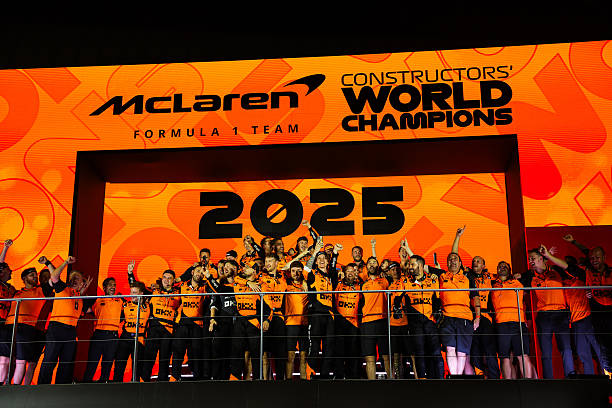

Takım logolarına tıklayarak takımların resmi F1 sitelerine gidebilirsiniz.


| SIRA | TAKIM | PUAN |
|---|---|---|
| 1 | McLaren | 833 |
| 2 | Mercedes | 469 |
| 3 | Red Bull Racing | 451 |
| 4 | Ferrari | 398 |
| 5 | Williams | 137 |
| 6 | Racing Bulls | 92 |
| 7 | Aston Martin | 89 |
| 8 | Haas F1 Team | 79 |
| 9 | Kick Sauber | 70 |
| 10 | Alpine | 22 |

Formula 1 tarihinin tek değişmez ismi olan İtalyan devi, Maranello’daki fabrikasından çıkan her araçta bir ulusun tutkusunu taşıyor. Takım, ikonik kırmızı rengiyle sadece bir yarış ekibi değil, motor sporları dünyasının en prestijli markası ve kültürel bir simge olarak kabul ediliyor.

Bir enerji içeceği üreticisinden dünya şampiyonuna dönüşen Red Bull, gridin en yenilikçi mühendislik gücü. Adrian Newey’in aerodinamik felsefesiyle şekillenen ekip, kusursuz operasyonel yapısı ve rekor kıran pit stop süreleriyle modern yarış stratejisinin standartlarını belirliyor.

Hibrit çağın başlangıcından itibaren üst üste 8 şampiyonluk kazanarak kırılması güç bir rekora imza atan ekip, Alman mühendislik disiplininin pistlerdeki zirve noktasıdır. Takım, teknolojik inovasyonları ve dayanıklılık odaklı yapısıyla "Gümüş Oklar" efsanesini geleceğe taşıyor.

Bruce McLaren’ın yarışçı ruhuyla temellerini attığı ekip, Woking’deki ileri teknoloji merkeziyle (MTC) bağımsız takımların neler başarabileceğini her yıl yeniden kanıtlıyor. İkonik Papaya turuncusuyla yarışan takım, inovatif geliştirme hızıyla büyük fabrika takımlarına doğrudan meydan okuyor.

Dokuz markalar şampiyonluğuyla Formula 1’in en seçkin tarihlerinden birine sahip olan Grove merkezli ekip, köklü bir aile takımından modern bir teknoloji devine dönüşüyor. Takım, saf yarışçılık geleneğini koruyarak veriye dayalı mühendislikle yeniden zirveyi hedefliyor.

Red Bull ailesinin İtalya merkezli ikinci gücü olan ekip, genç yetenekleri yetiştirme misyonunu üst düzey rekabetçi bir yapıyla birleştiriyor. Faenza’daki tesislerinde üretilen yüksek teknolojili araçlarıyla gridin en dinamik takımlarından biri olan VCARB, Red Bull Racing ile olan teknik sinerjisini podyum mücadelesine dönüştürüyor.

İngiliz lüks otomobil mirasını, milyar dolarlık yeni nesil tesisleri ve devasa rüzgar tüneli yatırımlarıyla birleştiren ekip, gridin yükselen süper gücü. Lawrence Stroll’un vizyonuyla hareket eden takım, lüks ve saf yarış performansını yeşil renkli gövdesinde buluşturuyor.

Formula 1’in tek Amerikan takımı olan Haas, sınırlı kaynaklarla büyük işler başarma felsefesiyle tanınıyor. Ferrari ile kurduğu stratejik teknik ortaklık sayesinde gridin en verimli modellerinden birini uygulayan ekip, saf yarışçı karakteri ve agresif gelişim stratejisiyle orta sıraların en dişli rakiplerinden biri konumunda.

İsviçre'nin hassas mühendislik geleneğini pistlere taşıyan Sauber, Formula 1 dünyasının en köklü operasyonlarından birine sahip. Hinwil’deki son teknoloji rüzgar tüneli ve tesisleriyle tanınan ekip, gelecekteki Audi projesi öncesinde yenilikçi tasarımları ve cesur görsel kimliğiyle dikkatleri üzerine çekiyor.

Fransız otomobil devi Renault Grubu'nun yarışçı ruhunu temsil eden Alpine, "mavi" renkleriyle gridde estetik ve performansı birleştiriyor. Enstone ve Viry-Châtillon merkezli iki dev tesisiyle kendi motorunu ve şasisini üreten sınırlı sayıdaki fabrika takımından biri olan ekip, Fransız mühendislik dehasını zirveye taşımayı hedefliyor.